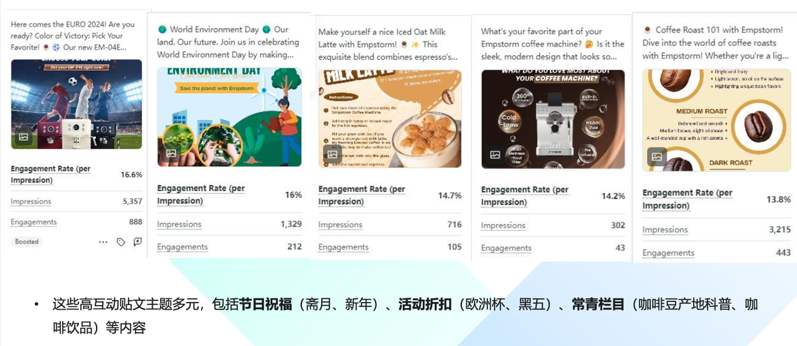

Cultural signal
家庭待客是高频生活场景
咖啡机不是孤立的厨房设备，而可以出现在周末聚会、家庭交流、节日和日常待客中。内容需要让受众看见“我会如何使用它”。
02 · Market entry · North America
Empstorm 的挑战不是“如何看起来更高级”，而是如何在北美市场从 value-for-money accessories seller 走向更有品质感、更贴近家庭生活方式的家用咖啡品牌。项目以市场洞察、视觉系统、微型 KOL 与销售承接共同完成一次轻量但完整的市场进入。

A family coffee corner
把家庭与社交场景的细节放进品牌视觉，让功能产品拥有可以被分享的生活场景。
预算有限时，品牌升级不靠堆砌资源，而靠一个可持续的表达系统。
Empstorm 在北美市场面对的核心问题，是品牌容易被理解成“性价比配件卖家”，难以形成更高端的品牌认知和长期受众黏性。项目需要兼顾短期销售与长期品牌印象。
我将任务拆成三层：先通过 Google Trends 与 Brandwatch 观察北美市场语境，再确定“家庭聚会 + understated luxury”的品牌方向，最后把视觉、KOL 与 DTC / Amazon / 社媒内容放进同一套 campaign system。
这一套方法也沿用了职业规划中的 GTM 思路：不是将社媒作为单点传播，而是把市场洞察转换成可以被渠道和销售共同使用的品牌资产。
Cultural signal
咖啡机不是孤立的厨房设备，而可以出现在周末聚会、家庭交流、节日和日常待客中。内容需要让受众看见“我会如何使用它”。
Brand opportunity
用干净的构图、稳定的色彩和生活细节建立 premium perception，而不是只用昂贵、夸张的符号告诉受众“这是高端”。
Commercial role
每一组内容都要同时考虑独立站、亚马逊和社媒的视觉一致性，让受众从种草、比较到下单时保持同一个品牌印象。
研究方法：Google Trends 与 Brandwatch，用于观察市场语境、受众兴趣与内容机会。
不依赖高成本联名，也可以用产品自身的颜色，和北美家庭、节日与体育文化中的重要时刻建立关系。
North American seasonal & sports campaign direction · Empstorm content system项目以机器自身的 Tiffany blue、piano black、burgundy 等色彩为基础，将其与球衣、节日和家庭空间中的色彩线索连接起来。
视觉不是简单换背景，而是建立一个可复制的规则：模糊的家庭 / 社交场景负责承接情绪，产品近景负责确认品质，颜色渐变和折扣信息负责完成转化。
01 · Diagnose
用市场趋势、舆情和既有内容检查品牌从“配件”到“家庭品牌”的距离。
Google Trends · Brandwatch
02 · Reframe
围绕家庭待客、节日聚会和 understated luxury 重新组织内容主张。
Brand narrative · Visual rules
03 · Activate
以 3 位面向北美受众的 micro-KOL 制作 holiday hosting / game-day “family coffee corner” 视频，优先选择真实家庭与生活方式语境。
KOL brief · Video · $3K
04 · Convert
统一独立站、Amazon、社媒素材的色彩与产品利益点，叠加折扣信息和可追踪链接。
DTC · Amazon · Meta
05 · Learn
关注视频完成率、品牌搜索、产品销售与内容互动，筛选可以长期复用的创意。
Reporting · Creative review
| 内容层 | 受众状态 | 素材结构 | 主要目的 | 承接位置 |
|---|---|---|---|---|
| Brand / mood | 还不了解品牌 | 家庭空间、节日色彩、低调品质感 | 建立第一印象 | Instagram / Facebook |
| Product / proof | 正在比较 | 机器细节、功能演示、咖啡结果、使用步骤 | 解释产品价值 | Amazon / DTC |
| KOL / trust | 需要被说服 | 真实家庭咖啡角、节日待客、体验式口播 | 提供第三方信任 | Creator / Reels |
| Offer / action | 准备购买 | 折扣、产品型号、限时信息、追踪链接 | 缩短行动距离 | Meta / Landing page |
视觉系统的价值在于减少每次活动重新发明素材的成本，同时保持不同渠道之间的品牌识别。
Family hosting
将产品放进北美家庭待客、周末聚会和节日餐桌的生活场景，内容中不只出现机器，还要出现空间、关系和时间感，让“咖啡机”变成社交体验的组成部分。
Sports & seasonal moments
没有联名预算时，使用产品自身色彩与球队、球衣及季节视觉建立即时联想，既保留品牌识别，又能参与北美受众熟悉的文化时刻。
这类市场本地化的判断标准，不是“看起来像北美广告”，而是受众能否在内容里识别自己的生活、节奏和社交关系。
方法归纳：Google Trends + Brandwatch → 市场语境 → 视觉规则 → KOL brief → 渠道复用以下结果按项目复盘口径呈现，分别对应内容表现、品牌搜索、产品销售与项目销售结果。
What changed
场景、颜色和 KOL 体验让产品从功能陈列进入家庭生活语境；同一套视觉规则也减少了不同渠道之间的割裂感。
Data discipline
视频完成率、品牌搜索、产品销售和项目销售分别对应不同环节；本页保留各自的指标名称，不把单一内容动作解释为全部增长原因。
Market entry
不是停留在“做本地化”，而是把文化线索转译成视觉、场景和 KOL brief。
Brand system
通过产品色彩、场景构图和信息层级，建立跨 DTC、Amazon 与社媒的可复用系统。
Commercial thinking
把视频完成率、品牌搜索、产品销售和渠道承接放在同一份复盘逻辑中。